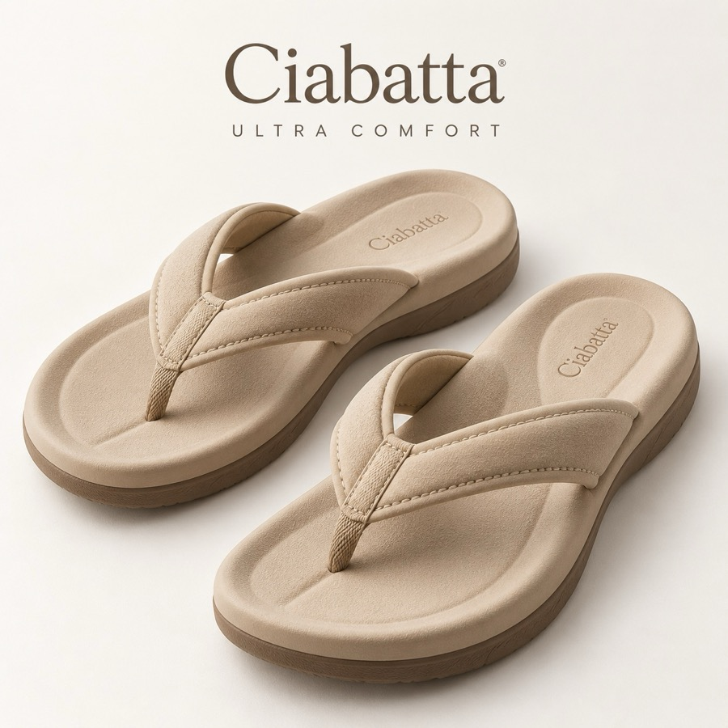
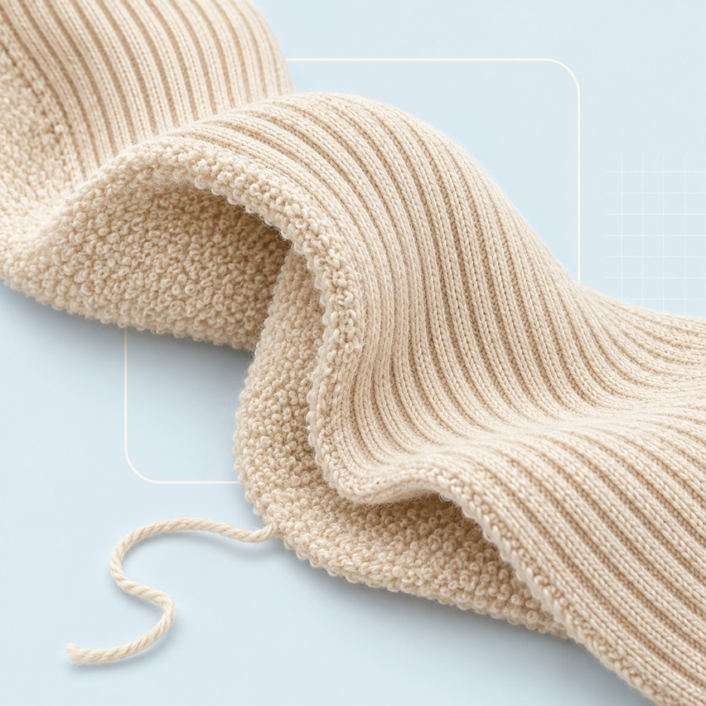

All-day comfort
A deep, cushioned footbed that gives a little as you walk, and straps with nothing hard against your skin.
Shipped straight from Italy
There’s no warehouse in between. Every order leaves the maker within 1–2 working days and travels with GLS.
Free 30-day returns
Wrong size? Send it back for free. Each returned pair is checked by hand, and perfect pairs find a new home.

What it’s made ofLight and airy, like the bread
Ciabatta is named after the bread, and the sole is built the same way: a moulded foam full of small air pockets, soft where you land and springy where you push off.

The socksRibbed outside, terry inside
A ribbed leg and soft terry loops under the foot, so they sit cushioned inside the loafers.
How Ciabatta Club works
From Italy to your door
We’re a small online shop for two makers. We don’t keep a warehouse: every pair ships straight from the maker, and returns go to one hub in the Netherlands.

- 01
Shipped by the maker
Ultra Comfort ships from Ciabatta; the handmade pairs from the Ortensi family workshop. Both hand your order to GLS within 1–2 working days.
Bergamo · Porto Sant’Elpidio - 02
Free returns to Venlo
Wrong size, or changed your mind? Returns are free for 30 days. Drop the parcel at any DHL point and it travels to our returns hub.
Kade Returns · Venlo, NL - 03
Checked by hand, offered again
Every returned pair is inspected. Perfect pairs go back on sale and are sent on from Venlo; anything less goes back to the maker where it can.
Resold from Venlo - 04
Pay the way you like
Card, PayPal, or pay later by invoice within 14 days. We refund within 3 working days of the returns check.
Card · PayPal · Invoice
Size finder